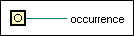

Generate Occurrence Function
Owning Palette: Occurrences Functions
Requires: Base Development System
Generates an occurrence that you can pass to the Wait on Occurrence and Set Occurrence functions.
 | Note National Instruments encourages you to use the Notifier Operations functions in place of occurrences for most operations. |

 Add to the block diagram Add to the block diagram |
 Find on the palette Find on the palette |